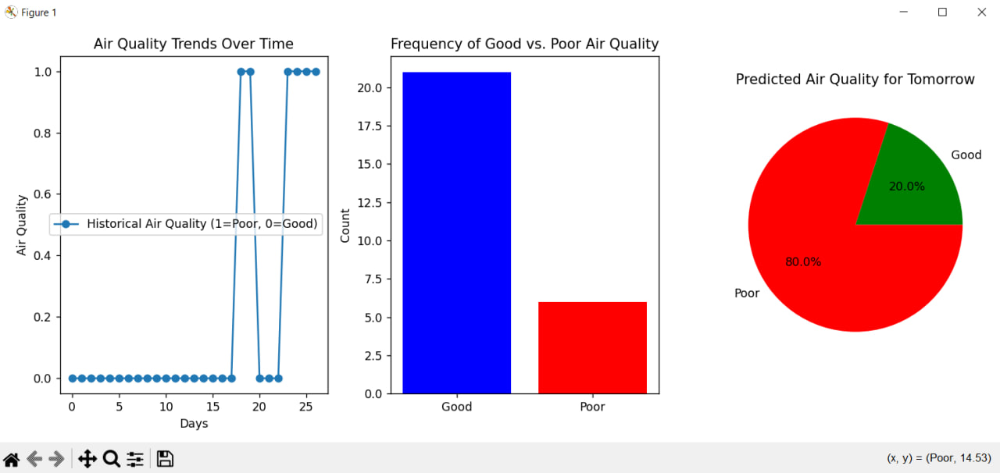

Project Overview
This project uses Bayesian inference to predict air quality in Almaty based on real-time data from the OpenWeather API and historical trends. The script fetches current PM2.5 and PM10 pollution levels and classifies the air quality as either "Good" or "Poor" based on predefined thresholds. A historical dataset is maintained, and prior probabilities are computed based on past occurrences of good and poor air quality. Using Bayesian updating and transition probabilities derived from historical trends, the model predicts the likelihood of air quality conditions for the next day. The results are visualized through line graphs, bar charts, and pie charts, providing insights into air quality trends, distribution, and future predictions. This project is particularly relevant for individuals and policymakers interested in monitoring and anticipating air pollution levels in urban environments.
Visuals
Below are some visual representations of air quality trends and predictions:
Code Implementation
import json
import requests
import matplotlib.pyplot as plt
import numpy as np
API_KEY = "087e141e4994ee3e8dd0fa8f3f273144"
CITY = "Almaty"
URL = f"http://api.openweathermap.org/data/2.5/air_pollution?lat=43.2567&lon=76.9286&appid={API_KEY}"
def fetch_air_quality():
response = requests.get(URL)
data = response.json()
if "list" in data and len(data["list"]) > 0:
pm25 = data["list"][0]["components"]["pm2_5"]
pm10 = data["list"][0]["components"]["pm10"]
return pm25, pm10
return None, None
def load_historical_data(file="air_quality_history.json"):
try:
with open(file, "r") as f:
return json.load(f)
except FileNotFoundError:
return []
def save_historical_data(data, file="air_quality_history.json"):
with open(file, "w") as f:
json.dump(data, f)
def calculate_prior(data):
if not data:
return [0.5, 0.5]
good_count = data.count(0)
poor_count = data.count(1)
total = len(data)
return [good_count / total, poor_count / total]
def bayesian_prediction(prior, data, today_pollution):
if not data:
return prior
likelihood = [0.9 if today_pollution == 0 else 0.1, 0.1 if today_pollution == 0 else 0.9]
numerators = [likelihood[i] * prior[i] for i in range(2)]
denominator = sum(numerators)
posterior = [num / denominator for num in numerators]
return posterior
def predict_tomorrow(prior, data):
if len(data) < 2:
return prior # Not enough historical data
# Transition Probabilities (Learned from Data)
transitions = {"Good-Good": 0, "Good-Poor": 0, "Poor-Good": 0, "Poor-Poor": 0}
for i in range(len(data) - 1):
if data[i] == 0 and data[i + 1] == 0:
transitions["Good-Good"] += 1
elif data[i] == 0 and data[i + 1] == 1:
transitions["Good-Poor"] += 1
elif data[i] == 1 and data[i + 1] == 0:
transitions["Poor-Good"] += 1
else:
transitions["Poor-Poor"] += 1
total_good = transitions["Good-Good"] + transitions["Good-Poor"]
total_poor = transitions["Poor-Good"] + transitions["Poor-Poor"]
if total_good > 0:
p_good_to_good = transitions["Good-Good"] / total_good
p_good_to_poor = transitions["Good-Poor"] / total_good
else:
p_good_to_good = p_good_to_poor = 0.5
if total_poor > 0:
p_poor_to_good = transitions["Poor-Good"] / total_poor
p_poor_to_poor = transitions["Poor-Poor"] / total_poor
else:
p_poor_to_good = p_poor_to_poor = 0.5
# Predict based on today's air quality
today = data[-1]
if today == 0:
return [p_good_to_good, p_good_to_poor]
else:
return [p_poor_to_good, p_poor_to_poor]
# Load historical data and fetch current pollution levels
data = load_historical_data()
pm25, pm10 = fetch_air_quality()
today_pollution = 1 if (pm25 and pm25 > 35) or (pm10 and pm10 > 50) else 0
data.append(today_pollution)
save_historical_data(data[-100:]) # Keep last 100 records
# Compute probabilities
prior = calculate_prior(data)
predicted_prob_today = bayesian_prediction(prior, data, today_pollution)
predicted_prob_tomorrow = predict_tomorrow(prior, data)
# Visualization
fig, axes = plt.subplots(1, 3, figsize=(12, 5))
axes[0].plot(range(len(data)), data, marker='o', linestyle='-', label='Historical Air Quality (1=Poor, 0=Good)')
axes[0].set_title("Air Quality Trends Over Time")
axes[0].set_xlabel("Days")
axes[0].set_ylabel("Air Quality")
axes[0].legend()
axes[1].bar(["Good", "Poor"], [data.count(0), data.count(1)], color=['blue', 'red'])
axes[1].set_title("Frequency of Good vs. Poor Air Quality")
axes[1].set_ylabel("Count")
axes[2].pie(predicted_prob_tomorrow, labels=["Good", "Poor"], autopct="%.1f%%", colors=['green', 'red'])
axes[2].set_title("Predicted Air Quality for Tomorrow")
plt.tight_layout()
plt.show()
Skills Demonstrated
- Fetching real-time air pollution data using an API.
- Applying Bayesian inference for probabilistic air quality prediction.
- Visualizing historical air quality trends and prediction probabilities.
- Using Python libraries such as Requests, Matplotlib, and NumPy for data processing and visualization.